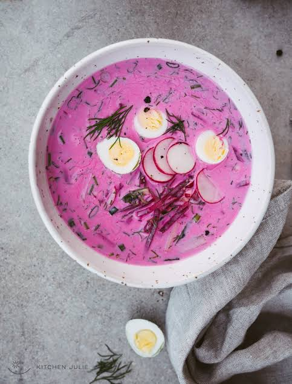

This traditional Lithuanian summer soup is kefir-based, served with boiled eggs and cooked potatoes on the side. It might sound strange enough to not ever try it, but I do recommend you do. It’s a delicious flavour combination, especially if you like beets and kefir or other fermented milk produce.
Cold Beetroot soup season starts once the weather gets warmer and everyone can get fresh crunchy cucumbers from their grandmother’s garden. This soup always reminds me of cozy family dinners in the countryside around a table set under old apple trees.